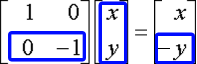

WebGL with Three JS
Real time rendering with javascript
Rendering Techniques
-
Rasterization
The task of taking an image described in a vector graphics format (shapes) and converting it into a raster image (pixels or dots)
- Ray Casting
- Ray Tracing
How do we get from
vertices to a shape

to
?
What is a vertex?

Model Space and World Space

View Space

Projection Space

End in 2D

Vertices to a shape
to
But how do we ...
transform between spaces?
Model -> World -> View -> Projection Space
Welcome to Linear Algebra
2D Vertex, meet Matrix!
Now multiply...

- ( 1 * x ) + ( 0 * y ) = x
-  ( 0 * x ) + ( -1 * y ) = -y
Transformations
-
identity:

-
scaling:

-
rotation:

Projection
[1, 0, 0] [x] [x] [0, 1, 0] [y] = [y] [0, 0, 0] [z] [0]
* We lose a dimension!
Composite Transformation
Putting it all together

World_View_Projection_Matrix =
World * View * Projection
Transformations + Projection
to
----------------------------------
Model * World_View_Projection_Matrix
How do we get from
a shape to colored pixels
to
?
Rasterization: Shapes -> Pixels

Texture: UV Mapping
Getting the value of the color...

Lighting
Getting the strength of the color...
Ambient, Diffuse, Specular
Materials
Combining all lighting and textures for the final color
Coloring the pixels:
Texture and Lighting
But how do we ...
figure out the amount of light?
Putting the rgba in a pixel's RGBA
Welcome BACK to Linear Algebra

The Normal
Lighting

The Dot Product

Lighting

- N * L = dot product
- color.rgb * dot product = amount of color
Lighting Demystified (somewhat)
Graphic Pipelines: How it started
Software Rendering

- Entirely done on CPU
- Unaided by graphics hardware
- Ultimate flexibility
How it was: Fixed Function Pipeline

 I couldn't find an image of a voodoo 1 card
I couldn't find an image of a voodoo 1 card
How it was: Fixed Function Pipeline

- Introduction of GPU hardware support
- Sacrificed flexibility for speed
The Graphics Card

How it is: Programmable Graphics Pipeline
How it is: Programmable Graphics Pipeline

What is WebGL?
OpenGL ES2.0 port built into the <canvas> DOM element
wtf
function init(scene) {
// Initialize
var gl = WebGLUtils.setupWebGL(scene.canvas);
if (!gl) {
return;
}
scene.program = simpleSetup(
gl,
// The ids of the vertex and fragment shaders
"vshader", "fshader",
// The vertex attribute names used by the shaders.
// The order they appear here corresponds to their index
// used later.
[ "vNormal", "vColor", "vPosition"],
// The clear color and depth values
[ 0, 0, 0, 0 ], 10000);
// Set up a uniform variable for the shaders
gl.uniform3f(gl.getUniformLocation(scene.program, "lightDir"), 0, 0, 1);
// Create a box. On return 'gl' contains a 'box' property with
// the BufferObjects containing the arrays for vertices,
// normals, texture coords, and indices.
scene.box = makeBox(gl);
// Set up the array of colors for the cube's faces
var colors = new Uint8Array(
[ 0, 0, 1, 1, 0, 0, 1, 1, 0, 0, 1, 1, 0, 0, 1, 1, // v0-v1-v2-v3 front
1, 0, 0, 1, 1, 0, 0, 1, 1, 0, 0, 1, 1, 0, 0, 1, // v0-v3-v4-v5 right
0, 1, 0, 1, 0, 1, 0, 1, 0, 1, 0, 1, 0, 1, 0, 1, // v0-v5-v6-v1 top
1, 1, 0, 1, 1, 1, 0, 1, 1, 1, 0, 1, 1, 1, 0, 1, // v1-v6-v7-v2 left
1, 0, 1, 1, 1, 0, 1, 1, 1, 0, 1, 1, 1, 0, 1, 1, // v7-v4-v3-v2 bottom
0, 1, 1, 1, 0, 1, 1, 1, 0, 1, 1, 1, 0, 1, 1, 1 ] // v4-v7-v6-v5 back
);
// Set up the vertex buffer for the colors
scene.box.colorObject = gl.createBuffer();
gl.bindBuffer(gl.ARRAY_BUFFER, scene.box.colorObject);
gl.bufferData(gl.ARRAY_BUFFER, colors, gl.STATIC_DRAW);
// Create some matrices to use later and save their locations in the shaders
scene.mvMatrix = new J3DIMatrix4();
scene.u_normalMatrixLoc = gl.getUniformLocation(scene.program, "u_normalMatrix");
scene.normalMatrix = new J3DIMatrix4();
scene.u_modelViewProjMatrixLoc =
gl.getUniformLocation(scene.program, "u_modelViewProjMatrix");
scene.mvpMatrix = new J3DIMatrix4();
// Enable all of the vertex attribute arrays.
gl.enableVertexAttribArray(0);
gl.enableVertexAttribArray(1);
gl.enableVertexAttribArray(2);
// Set up all the vertex attributes for vertices, normals and colors
gl.bindBuffer(gl.ARRAY_BUFFER, scene.box.vertexObject);
gl.vertexAttribPointer(2, 3, gl.FLOAT, false, 0, 0);
gl.bindBuffer(gl.ARRAY_BUFFER, scene.box.normalObject);
gl.vertexAttribPointer(0, 3, gl.FLOAT, false, 0, 0);
gl.bindBuffer(gl.ARRAY_BUFFER, scene.box.colorObject);
gl.vertexAttribPointer(1, 4, gl.UNSIGNED_BYTE, false, 0, 0);
// Bind the index array
gl.bindBuffer(gl.ELEMENT_ARRAY_BUFFER, scene.box.indexObject);
return gl;
}
function reshape(scene, gl) {
var canvas = scene.canvas;
// Set the viewport and projection matrix for the scene
gl.viewport(0, 0, canvas.width, canvas.height);
scene.perspectiveMatrix = new J3DIMatrix4();
scene.perspectiveMatrix.perspective(30, canvas.width/canvas.height, 1, 10000);
scene.perspectiveMatrix.lookat(0, 0, 7, 0, 0, 0, 0, 1, 0);
}
function drawPicture(scene, gl) {
// Make sure the canvas is sized correctly.
reshape(scene, gl);
// Clear the canvas
gl.clear(gl.COLOR_BUFFER_BIT | gl.DEPTH_BUFFER_BIT);
// Make a model/view matrix.
scene.mvMatrix.makeIdentity();
scene.mvMatrix.rotate(20, 1,0,0);
scene.mvMatrix.rotate(scene.currentAngle, 0,1,0);
// Construct the normal matrix from the model-view matrix and pass it in
scene.normalMatrix.load(scene.mvMatrix);
scene.normalMatrix.invert();
scene.normalMatrix.transpose();
scene.normalMatrix.setUniform(gl, scene.u_normalMatrixLoc, false);
// Construct the model-view * projection matrix and pass it in
scene.mvpMatrix.load(scene.perspectiveMatrix);
scene.mvpMatrix.multiply(scene.mvMatrix);
scene.mvpMatrix.setUniform(gl, scene.u_modelViewProjMatrixLoc, false);
// Draw the cube
gl.drawElements(gl.TRIANGLES, scene.box.numIndices, gl.UNSIGNED_BYTE, 0);
scene.currentAngle += scene.incAngle;
if (scene.currentAngle > 360)
scene.currentAngle -= 360;
}
window.samples.webgl_spinning_cube = {
initialize: function(canvas) {
var scene = { canvas: canvas };
canvas.addEventListener('webglcontextlost', handleContextLost, false);
canvas.addEventListener('webglcontextrestored', handleContextRestored, false);
canvas.width = sample_defaults.width;
canvas.height = sample_defaults.height;
var gl = init(scene);
if (!gl) {
return;
}
scene.currentAngle = 0;
scene.incAngle = 0.5;
var requestId;
function animate() {
drawPicture(scene, gl);
requestId = window.requestAnimFrame(animate, canvas);
}
animate();
function handleContextLost(e) {
e.preventDefault();
if (requestId !== undefined) {
window.cancelAnimFrame(requestId);
requestId = undefined;
}
}
function handleContextRestored() {
init(scene);
animate();
}
}
What we care about
- Setup on CPU
- Vertex Processor (vertices -> shapes)
- Fragment Processor (pixels -> colored pixels)
CPU: Javascript
var gl = WebGLUtils.setupWebGL(scene.canvas);
scene.program = simpleSetup(
gl,
"webgl_vshader", // id of the vertex shader
"webgl_bland_fshader", // id of fragment shader
[ "vPosition"], // Vertex attribute used by the shader
[ 0, 0, 0, 0 ], 10000); // The clear color and depth values
scene.box = makeBox(gl);
// Set up the vertex buffer
gl.bindBuffer(gl.ARRAY_BUFFER, scene.box.vertexObject);
...
CPU: Javascript
function drawPicture(scene, gl) {
// Clear the canvas
gl.clear(gl.COLOR_BUFFER_BIT | gl.DEPTH_BUFFER_BIT);
// Construct the model-view * projection matrix
scene.mvpMatrix.load(scene.perspectiveMatrix);
scene.mvpMatrix.multiply(scene.mvMatrix);
// Pass the moel-view-proj matrix in to the Shaders
scene.mvpMatrix.setUniform(gl, scene.u_modelViewProjMatrix, false);
// Draw the cube
gl.drawElements(gl.TRIANGLES, scene.box.numIndices, gl.UNSIGNED_BYTE,0);
}
Vertex Processor: Vertex Shader
uniform mat4 u_modelViewProjMatrix; // Passed in from CPU
attribute vec4 vPosition; // Information from vertex
void main()
{
gl_Position = u_modelViewProjMatrix * vPosition;
}
Fragment Processor: Fragment Shader
void main()
{
gl_FragColor = vec4(1, 1, 1, 1); // RGBA
}
GLSL
- OpenGL Shading Language (GLSL): A high-level shading language based on the syntax of the C programming language.
Vertex Shader
uniform mat4 u_modelViewProjMatrix; // Passed in from CPU
uniform mat4 u_normalMatrix;
uniform vec3 lightDir;
attribute vec3 vNormal; // Received from Vertex Buffer
attribute vec4 vPosition;
varying float v_Dot; // Variables output to Fragment Shader
varying vec4 v_Color;
void main()
{
gl_Position = u_modelViewProjMatrix * vPosition;
v_Color = vec4(1, 1, 1, 1); // White
vec4 transNormal = u_normalMatrix * vec4(vNormal, 1);
v_Dot = max(dot(transNormal.xyz, lightDir), 0.0);
}
Fragment Shader
varying float v_Dot; // Passed in from Vertex Shader via Rasterizer
varying vec4 v_Color;
void main()
{
gl_FragColor = vec4(v_Color.xyz * v_Dot, v_Color.a);
}
What is ThreeJS?
The aim of the project is to create a lightweight 3D library with a very low level of complexity — in other words, for dummies.
The library provides <canvas>, <svg> and WebGL renderers.
Intro to ThreeJS: Spinning Cube
var scene = new THREE.Scene();
var camera = new THREE.PerspectiveCamera( 30, width / height, 1, 1000 );
camera.position.set(0, 3, 7);
camera.lookAt( new THREE.Vector3(0,0,0));
var scale = 2.5;
var geometry = new THREE.CubeGeometry( scale, scale, scale );
var material = new THREE.MeshBasicMaterial( { color: 0xdddddd } );
var mesh = new THREE.Mesh( geometry, material );
scene.add( mesh );
var renderer = new THREE.WebGLRenderer({canvas: canvas, antialias: true});
renderer.setSize( width, height );
function animate() {
requestAnimationFrame( animate, canvas );
mesh.rotation.y += 0.008;
renderer.render( scene, camera );
}
animate();
}
16 lines of code
Scene
var scene = new THREE.Scene();
Encapsulates everything with regard to this rendering
- Matrices
- Camera
- Models
Camera
var camera = new THREE.PerspectiveCamera(30, width/height, 1,1000);
camera.position.set(0, 3, 7);
camera.lookAt( new THREE.Vector3(0,0,0));
Geometry
var scale = 2.5;
var geometry = new THREE.CubeGeometry( scale, scale, scale );
Materials
var material = new THREE.MeshBasicMaterial({ color: 0xdddddd });
Encapsulates:
- Texture
- Attributes
- Shaders
Mesh
var mesh = new THREE.Mesh( geometry, material );
scene.add( mesh );
- geometry: Vertices -> Shapes
- material: Pixels -> Colored Pixels
- World Matrix
Renderer
var renderer = new THREE.WebGLRenderer({canvas: canvas});
renderer.setSize( width, height );
request Animation Frame?
Welcome to the Render Loop
function animate() {
requestAnimationFrame( animate );
mesh.rotation.y += 0.008;
renderer.render( scene, camera );
}
animate();
Materials: Phong
Assignment: Add Light
var material = new THREE.MeshPhongMaterial({ color: 0xdddddd });
...
var directionalLight = new THREE.DirectionalLight ( 0xffffffff );
directionalLight.position.set(0, 3, 7);
scene.add( directionalLight );
Materials: Texture
Assignment: Add Texture
var texture = THREE.ImageUtils.loadTexture(
'images/checker_large.gif',
{},
function() {
animate();
}
);
//var material = new THREE.MeshPhongMaterial({ color: 0xdddddd });
var material = new THREE.MeshPhongMaterial({ map: texture });
ThreeJS: Loading Meshes
Credit for model goes to Chris Kuhn
Blender and ThreeJS
- Grab models from Blendswap: Startrek Collection
- Blender: Content creation tool for 3D models
- Can export to the Three js file format
- Startrek Enterprise Mesh JSON
ThreeJS: Importing Mesh
// REMOVED
// var geometry = new THREE.CubeGeometry( 70, 70, 70 );
// var material = new THREE.MeshBasicMaterial({color: 0xdddddd});
var loader = new THREE.JSONLoader();
loader.load("js/meshes/Startrek_Enterprise.js", function(geometry, materials) {
mesh = new THREE.Mesh( geometry, materials[0] );
scene.add( mesh );
...
with Textures
Credit for model goes to Chris Kuhn
Apache Texture File{kind=link}
ThreeJS: Particles
Primitives

ThreeJS: Particles
geometry = new THREE.Geometry();
for ( i = 0; i < 20000; i ++ ) {
var vertex = new THREE.Vector3();
vertex.x = Math.random() * 2000 - 1000;
vertex.y = Math.random() * 2000 - 1000;
vertex.z = Math.random() * 2000 - 1000;
geometry.vertices.push( vertex );
}
particles = new THREE.ParticleSystem( geometry, materials[i] );
scene.add( particles );
Only 20k, how about a million?
ThreeJS: Normal Mapping
Using the RGB for your normal's XYZ

Old school: Per Vertex Lighting
New school: Per Pixel Lighting
Normal Map
Normal Map
ThreeJS: Custom Shaders
// Grab shader code
var vertexShader = $('#normal_map_vs').text();
var fragmentShader = $('#normal_map_fs').text();
// Configure material parameters
var parameters = {
// Shaders
fragmentShader: fragmentShader,
vertexShader: vertexShader,
// Shader Data
uniforms: uniforms,
attributes: attributes
};
// Create custom shader material
var normal_material = new THREE.ShaderMaterial( parameters );
// Add mesh
var mesh = new THREE.Mesh( geometry, normal_material );
scene.add( mesh );
Showcase: Skin Material
WebGL Skin MaterialThreeJS: Post-Processing
Render to Texture
var renderTarget = new THREE.WebGLRenderTarget(
sample_defaults.width,
sample_defaults.height,
renderTargetParameters);
...
renderer.render( worldScene, camera, renderTarget );
planeMaterial.uniforms[ "tDiffuse" ].texture = renderTarget;
renderer.render( planeScene, camera );
2 Pass Blurring

Multiple passess...
var composer = new THREE.EffectComposer( renderer );
// 3 Passes...
var renderModel = new THREE.RenderPass(scene, camera);
var horizontalBlur = new THREE.ShaderPass(horizontalBlurShaders);
var verticalBlur = new THREE.ShaderPass(verticalBlurShaders);
verticalBlur.renderToScreen = true;
composer.addPass( renderModel );
composer.addPass( horizontalBlur );
composer.addPass( verticalBlur );
...
// renderer.render( scene, camera ); REMOVED
composer.render(0.1);
Showcase: Post-processing Filters
Post ProcessingShadow Maps
Render to texture
Render a snap shot from the perspective of the light

Height Map in Vertex Buffer
John Carmack on WebGL
Showcase
For next time...
- GPGPU
- Shadows
- Animations
- Terrain Rendering
- Dynamic Level of Detail
- Culling
- Geometry Shaders
- and more ...